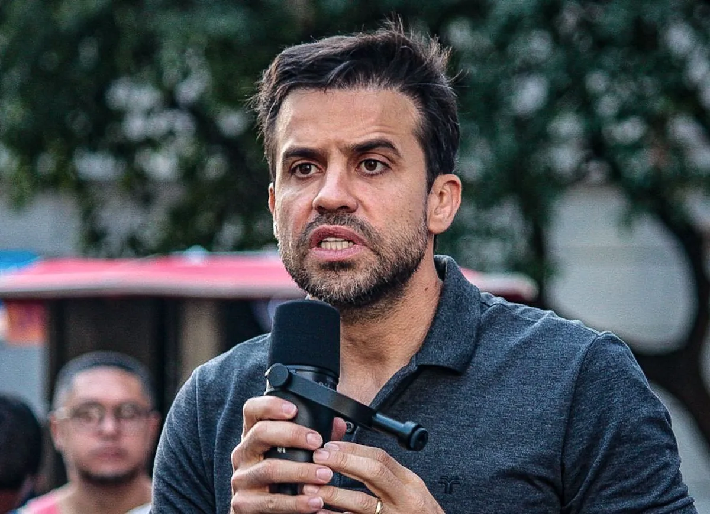

O Anúncio Surpreendente
No último fim de semana, Pablo Marçal, o influente empresário e coach, fez um anúncio que chamou a atenção de todos: sua candidatura à prefeitura da cidade. O movimento, que pegou muitos de surpresa, tem gerado um grande burburinho nas redes sociais e na mídia tradicional.
Motivos por trás da Candidatura
De acordo com Marçal, sua decisão de concorrer ao cargo de prefeito é motivada por um desejo de trazer novas ideias e soluções inovadoras para a gestão da cidade. Em uma declaração pública, ele destacou a necessidade de uma administração mais eficiente e voltada para o desenvolvimento sustentável e a inovação social.
Impacto na Cidade
A candidatura de Marçal gerou um grande interesse entre os eleitores e especialistas políticos. Muitos cidadãos estão curiosos para saber como sua experiência no setor privado e sua abordagem empreendedora irão se traduzir em políticas públicas e administração municipal.
_(cropped).jpg)
Reações da Comunidade
A reação ao anúncio foi mista. Muitos eleitores expressaram entusiasmo nas redes sociais, vendo em Marçal uma nova esperança para a política local, enquanto outros permanecem céticos quanto às suas propostas e à sua experiência política.
Próximos Passos
Enquanto a campanha para a prefeitura começa a ganhar força, a comunidade política e os eleitores estão ansiosos para acompanhar o desenvolvimento da candidatura de Pablo Marçal. O cenário político promete ser dinâmico e competitivo nas próximas semanas.